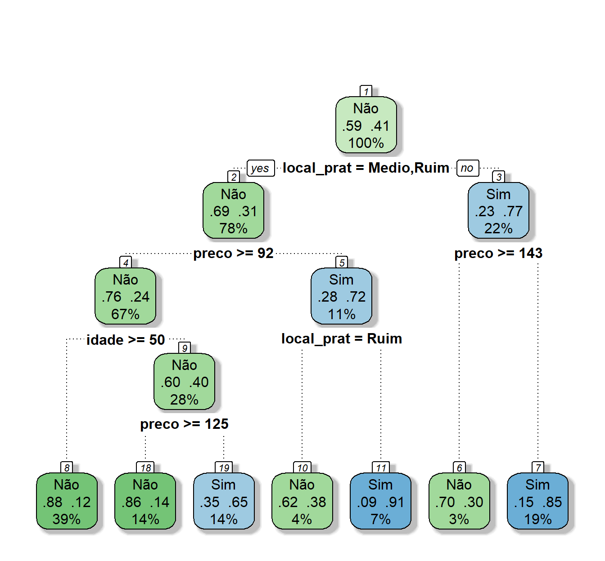

library(tidyverse)
library(ISLR)Arvores de Classificação - Única e GBM
Bibliotecas
Dados
Vamos começar a aplicar a metodologia de árvores usando árvores de classificação para analisar os dados existentes em Carseats. Este conjunto de dados (simulado) é sobre venda de assentos de criança para carros. Ele tem 400 observações das seguintes variáveis (11), cujos nomes serão convertidos para o português:
Sales: vendas em unidades (em mil) em cada local
CompPrice: preço cobrado pelo competidor em cada local
Income: nível de renda da comunidade local (em mil US$)
Advertising: orçamento local de propaganda (em mil US$)
Population: população na região (em mil)
Price: preço cobrado pela empresa em cada local
ShelveLoc: um fator com níveis Ruim, Bom e Medio indicando a qualidade da localização das prateleiras para os assentos em cada lugar
Age: idade media da população local
Education: nível de educação em cada local
Urban: um fator Sim e Não indicando se a loja esta em uma área urbana ou rural
US: um fator indicando se a loja é nos EUA ou não
Neste dados, Sales é a variável resposta, só que ela é uma variável contínua, por este motivo vamos usá-la para criar uma variável binária. Vamos usar a função ifelse() para criar a variável binária, que chamaremos de alta, ela assume os valores Sim se Sales for maior que 8 e assume o valor Não caso contrário:
data(Carseats)
summary(Carseats) Sales CompPrice Income Advertising
Min. : 0.000 Min. : 77 Min. : 21.00 Min. : 0.000
1st Qu.: 5.390 1st Qu.:115 1st Qu.: 42.75 1st Qu.: 0.000
Median : 7.490 Median :125 Median : 69.00 Median : 5.000
Mean : 7.496 Mean :125 Mean : 68.66 Mean : 6.635
3rd Qu.: 9.320 3rd Qu.:135 3rd Qu.: 91.00 3rd Qu.:12.000
Max. :16.270 Max. :175 Max. :120.00 Max. :29.000
Population Price ShelveLoc Age Education
Min. : 10.0 Min. : 24.0 Bad : 96 Min. :25.00 Min. :10.0
1st Qu.:139.0 1st Qu.:100.0 Good : 85 1st Qu.:39.75 1st Qu.:12.0
Median :272.0 Median :117.0 Medium:219 Median :54.50 Median :14.0
Mean :264.8 Mean :115.8 Mean :53.32 Mean :13.9
3rd Qu.:398.5 3rd Qu.:131.0 3rd Qu.:66.00 3rd Qu.:16.0
Max. :509.0 Max. :191.0 Max. :80.00 Max. :18.0
Urban US
No :118 No :142
Yes:282 Yes:258
str(Carseats)'data.frame': 400 obs. of 11 variables:
$ Sales : num 9.5 11.22 10.06 7.4 4.15 ...
$ CompPrice : num 138 111 113 117 141 124 115 136 132 132 ...
$ Income : num 73 48 35 100 64 113 105 81 110 113 ...
$ Advertising: num 11 16 10 4 3 13 0 15 0 0 ...
$ Population : num 276 260 269 466 340 501 45 425 108 131 ...
$ Price : num 120 83 80 97 128 72 108 120 124 124 ...
$ ShelveLoc : Factor w/ 3 levels "Bad","Good","Medium": 1 2 3 3 1 1 3 2 3 3 ...
$ Age : num 42 65 59 55 38 78 71 67 76 76 ...
$ Education : num 17 10 12 14 13 16 15 10 10 17 ...
$ Urban : Factor w/ 2 levels "No","Yes": 2 2 2 2 2 1 2 2 1 1 ...
$ US : Factor w/ 2 levels "No","Yes": 2 2 2 2 1 2 1 2 1 2 ...Manipulando os dados
cad_crianca <- Carseats %>% rename(vendas = Sales,
preco_comp = CompPrice,
renda = Income,
propaganda = Advertising,
populacao = Population,
preco = Price,
local_prat = ShelveLoc,
idade = Age,
educacao = Education,
urbano = Urban,
eua = US)
cad_crianca <- cad_crianca %>% mutate(alta = ifelse(vendas > 8, "Sim",
"Não")) %>%
mutate(alta = factor(alta))
cad_crianca<- cad_crianca %>% mutate(local_prat = case_when(
local_prat == "Bad" ~ "Ruim",
local_prat == "Good" ~ "Bom",
local_prat == "Medium" ~ "Medio"))%>% mutate(local_prat = factor(local_prat))
cad_crianca<- cad_crianca %>% mutate(urbano = case_when(
urbano == "Yes" ~ "Sim",
urbano == "No" ~ "Não")) %>% mutate(urbano = factor(urbano))
cad_crianca<- cad_crianca %>% mutate(eua = case_when(
eua == "Yes" ~ "Sim",
eua == "No" ~ "Não")) %>% mutate(eua = factor(eua))
cad_crianca<- cad_crianca %>% select(-vendas)
str(cad_crianca)'data.frame': 400 obs. of 11 variables:
$ preco_comp: num 138 111 113 117 141 124 115 136 132 132 ...
$ renda : num 73 48 35 100 64 113 105 81 110 113 ...
$ propaganda: num 11 16 10 4 3 13 0 15 0 0 ...
$ populacao : num 276 260 269 466 340 501 45 425 108 131 ...
$ preco : num 120 83 80 97 128 72 108 120 124 124 ...
$ local_prat: Factor w/ 3 levels "Bom","Medio",..: 3 1 2 2 3 3 2 1 2 2 ...
$ idade : num 42 65 59 55 38 78 71 67 76 76 ...
$ educacao : num 17 10 12 14 13 16 15 10 10 17 ...
$ urbano : Factor w/ 2 levels "Não","Sim": 2 2 2 2 2 1 2 2 1 1 ...
$ eua : Factor w/ 2 levels "Não","Sim": 2 2 2 2 1 2 1 2 1 2 ...
$ alta : Factor w/ 2 levels "Não","Sim": 2 2 2 1 1 2 1 2 1 1 ...summary(cad_crianca) preco_comp renda propaganda populacao
Min. : 77 Min. : 21.00 Min. : 0.000 Min. : 10.0
1st Qu.:115 1st Qu.: 42.75 1st Qu.: 0.000 1st Qu.:139.0
Median :125 Median : 69.00 Median : 5.000 Median :272.0
Mean :125 Mean : 68.66 Mean : 6.635 Mean :264.8
3rd Qu.:135 3rd Qu.: 91.00 3rd Qu.:12.000 3rd Qu.:398.5
Max. :175 Max. :120.00 Max. :29.000 Max. :509.0
preco local_prat idade educacao urbano eua
Min. : 24.0 Bom : 85 Min. :25.00 Min. :10.0 Não:118 Não:142
1st Qu.:100.0 Medio:219 1st Qu.:39.75 1st Qu.:12.0 Sim:282 Sim:258
Median :117.0 Ruim : 96 Median :54.50 Median :14.0
Mean :115.8 Mean :53.32 Mean :13.9
3rd Qu.:131.0 3rd Qu.:66.00 3rd Qu.:16.0
Max. :191.0 Max. :80.00 Max. :18.0
alta
Não:236
Sim:164
Treino e Teste
library(caret)Carregando pacotes exigidos: lattice
Attaching package: 'caret'The following object is masked from 'package:purrr':
liftset.seed(21)
y <- cad_crianca$alta
indice_teste <- createDataPartition(y, times = 1, p = 0.2, list = FALSE)
conj_treino <- cad_crianca %>% slice(-indice_teste)
conj_teste <- cad_crianca %>% slice(indice_teste)
str(conj_treino)'data.frame': 319 obs. of 11 variables:
$ preco_comp: num 138 111 113 141 124 136 132 121 117 122 ...
$ renda : num 73 48 35 64 113 81 110 78 94 35 ...
$ propaganda: num 11 16 10 3 13 15 0 9 4 2 ...
$ populacao : num 276 260 269 340 501 425 108 150 503 393 ...
$ preco : num 120 83 80 128 72 120 124 100 94 136 ...
$ local_prat: Factor w/ 3 levels "Bom","Medio",..: 3 1 2 3 3 1 2 3 1 2 ...
$ idade : num 42 65 59 38 78 67 76 26 50 62 ...
$ educacao : num 17 10 12 13 16 10 10 10 13 18 ...
$ urbano : Factor w/ 2 levels "Não","Sim": 2 2 2 2 1 2 1 1 2 2 ...
$ eua : Factor w/ 2 levels "Não","Sim": 2 2 2 1 2 2 1 2 2 1 ...
$ alta : Factor w/ 2 levels "Não","Sim": 2 2 2 1 2 2 1 2 2 1 ...prop.table(table(conj_treino$alta))
Não Sim
0.5893417 0.4106583 str(conj_teste)'data.frame': 81 obs. of 11 variables:
$ preco_comp: num 117 115 132 115 147 145 114 121 123 103 ...
$ renda : num 100 105 113 28 74 119 38 41 42 93 ...
$ propaganda: num 4 0 0 11 13 16 13 5 11 15 ...
$ populacao : num 466 45 131 29 251 294 317 412 16 188 ...
$ preco : num 97 108 124 86 131 113 128 110 134 103 ...
$ local_prat: Factor w/ 3 levels "Bom","Medio",..: 2 2 2 1 1 3 1 2 2 3 ...
$ idade : num 55 71 76 53 52 42 50 54 59 74 ...
$ educacao : num 14 15 17 18 10 12 16 10 13 16 ...
$ urbano : Factor w/ 2 levels "Não","Sim": 2 2 1 2 2 2 2 2 2 2 ...
$ eua : Factor w/ 2 levels "Não","Sim": 2 1 2 2 2 2 2 2 2 2 ...
$ alta : Factor w/ 2 levels "Não","Sim": 1 1 1 2 2 2 2 1 1 1 ...prop.table(table(conj_teste$alta))
Não Sim
0.5925926 0.4074074 Arvore de Classificação
Na biblioteca rpart as arvores de classificação são obtidas usando o método class. Existem alguns controles que podem ser feitos nos parametros da arvore.
Neste exemplo só definimos o menor conjunto de dados numa partição (minsplit) e o parametro de complexidade cp. Posteriormente vamos ampliar este controle. Um valor de cp muito pequeno ocasiona overfitting e um valor muito grande resulta numa arvore muito pequena (underfitting). Nos dois casos se diminui o desempenho do modelo.
##Usando rpart para desenvolver a arvore
library(rpart)
arvcl <- rpart(alta ~ .,
data=conj_treino,
method="class", #para arvore de classificação
control=rpart.control(minsplit=30,cp=0.02))
plot(arvcl)
text(arvcl,pretty=0)# Regras de Decisão
arvcln= 319
node), split, n, loss, yval, (yprob)
* denotes terminal node
1) root 319 131 Não (0.58934169 0.41065831)
2) local_prat=Medio,Ruim 249 77 Não (0.69076305 0.30923695)
4) preco>=92 213 51 Não (0.76056338 0.23943662)
8) idade>=49.5 123 15 Não (0.87804878 0.12195122) *
9) idade< 49.5 90 36 Não (0.60000000 0.40000000)
18) preco>=124.5 44 6 Não (0.86363636 0.13636364) *
19) preco< 124.5 46 16 Sim (0.34782609 0.65217391) *
5) preco< 92 36 10 Sim (0.27777778 0.72222222)
10) local_prat=Ruim 13 5 Não (0.61538462 0.38461538) *
11) local_prat=Medio 23 2 Sim (0.08695652 0.91304348) *
3) local_prat=Bom 70 16 Sim (0.22857143 0.77142857)
6) preco>=142.5 10 3 Não (0.70000000 0.30000000) *
7) preco< 142.5 60 9 Sim (0.15000000 0.85000000) *Desenhando a Árvore de uma forma mais clara
library(rattle)Carregando pacotes exigidos: bitopsRattle: A free graphical interface for data science with R.
Version 5.5.1 Copyright (c) 2006-2021 Togaware Pty Ltd.
Type 'rattle()' to shake, rattle, and roll your data.library(rpart.plot)
library(RColorBrewer)
fancyRpartPlot(arvcl, caption = NULL)
Previsões
# Fazendo Previsões
y_chapeu <- predict(arvcl, newdata = conj_teste, type="class")
confusionMatrix(y_chapeu, conj_teste$alta, positive="Sim") Confusion Matrix and Statistics
Reference
Prediction Não Sim
Não 37 13
Sim 11 20
Accuracy : 0.7037
95% CI : (0.5919, 0.8001)
No Information Rate : 0.5926
P-Value [Acc > NIR] : 0.02573
Kappa : 0.3805
Mcnemar's Test P-Value : 0.83826
Sensitivity : 0.6061
Specificity : 0.7708
Pos Pred Value : 0.6452
Neg Pred Value : 0.7400
Prevalence : 0.4074
Detection Rate : 0.2469
Detection Prevalence : 0.3827
Balanced Accuracy : 0.6884
'Positive' Class : Sim
Arvore de Classificação no caret
##Usando rpart para desenvolver a arvore
library(rpart)
set.seed(21)
## Otimizamos o valor de cp usando um 10-fold cv
# O parametro tuneLength diz para o algoritmo escolher diferentes valores para cp
# O parametro tuneGrid permite decidir que valores cp deve assumir enquanto que o
# tuneLength somente limita o número default de parametros que se usa.
tgrid <- expand.grid(cp = seq(0.01,0.10,0.001))
ctrl <- trainControl(method = "cv", classProbs=TRUE)
arvclass <- train(alta ~ . , data = conj_treino, method = "rpart",
trControl = ctrl,
tuneGrid = tgrid
)
# Mostra a acurácia vs cp (parametro de complexidade)
plot(arvclass)## Indica o melhor valor de cp
arvclass$bestTune cp
7 0.016Uma forma melhor de ver a Árvore
## melhorando apresentação da árvore
library(rattle)
library(rpart.plot)
library(RColorBrewer)
fancyRpartPlot(arvclass$finalModel, caption = NULL)Previsões
# Fazendo Previsões
y_chapeu <- arvclass %>% predict(conj_teste) %>%
factor(levels = levels(conj_teste$alta))
head(y_chapeu)[1] Não Não Não Sim Sim Não
Levels: Não SimconfusionMatrix(y_chapeu, conj_teste$alta, positive="Sim") Confusion Matrix and Statistics
Reference
Prediction Não Sim
Não 40 13
Sim 8 20
Accuracy : 0.7407
95% CI : (0.6314, 0.8318)
No Information Rate : 0.5926
P-Value [Acc > NIR] : 0.003896
Kappa : 0.45
Mcnemar's Test P-Value : 0.382733
Sensitivity : 0.6061
Specificity : 0.8333
Pos Pred Value : 0.7143
Neg Pred Value : 0.7547
Prevalence : 0.4074
Detection Rate : 0.2469
Detection Prevalence : 0.3457
Balanced Accuracy : 0.7197
'Positive' Class : Sim
GBM
Criando um grid para avaliar os parametros
hiper_grid <- expand.grid(
shrinkage = c(.001, .01, .1),
interaction.depth = c(1, 3, 5),
n.minobsinnode = c(5, 10, 15),
bag.fraction = c(.65, 1),
optimal_trees = 0, # um lugar para guardar resultados
min_erro = 0 # um lugar para guardar resultados
)
# número total de combinações
nrow(hiper_grid)[1] 54Avaliando o grid de parametros
library(gbm)Loaded gbm 2.1.8.1conj_treino$alta <- as.numeric(conj_treino$alta)
conj_treino <- transform(conj_treino, alta=alta - 1)
conj_treino$eua <- as.numeric(conj_treino$eua)
conj_treino <- transform(conj_treino, eua=eua - 1)
conj_treino$local_prat <- as.numeric(conj_treino$local_prat)
conj_treino <- transform(conj_treino, local_prat=local_prat - 1)
#Busca no grid
for(i in 1:nrow(hiper_grid)) {
#
set.seed(21)
# treina o modelo
gbm.tune <- gbm(
formula = alta ~ .,
distribution = "bernoulli",
data = conj_treino,
n.trees = 5000,
interaction.depth = hiper_grid$interaction.depth[i],
shrinkage = hiper_grid$shrinkage[i],
n.minobsinnode = hiper_grid$n.minobsinnode[i],
bag.fraction = hiper_grid$bag.fraction[i],
train.fraction = .75,
n.cores = NULL,
verbose = FALSE
)
# adiciona os erros de treino e arvores ao grid
hiper_grid$optimal_trees[i] <- which.min(gbm.tune$valid.error)
hiper_grid$min_erro[i] <- min(gbm.tune$valid.error)
}
hiper_grid %>% dplyr::arrange(min_erro) %>% head(10) shrinkage interaction.depth n.minobsinnode bag.fraction optimal_trees
1 0.10 1 15 0.65 372
2 0.10 1 10 0.65 293
3 0.01 1 15 0.65 2906
4 0.10 3 5 1.00 208
5 0.01 1 10 0.65 2904
6 0.10 1 15 1.00 645
7 0.01 3 10 1.00 1871
8 0.10 1 5 0.65 297
9 0.10 3 10 0.65 91
10 0.01 1 5 0.65 2721
min_erro
1 0.5791345
2 0.5845112
3 0.5924547
4 0.5972617
5 0.5985068
6 0.6025920
7 0.6045516
8 0.6046190
9 0.6074368
10 0.6101727Modelo final
#
set.seed(21)
# treina o modelo GBM
gbm.fit.final <- gbm(
formula = alta ~ .,
distribution = "bernoulli",
data = conj_treino,
n.trees = 372,
interaction.depth = 1,
shrinkage = 0.10,
n.minobsinnode = 15,
bag.fraction = 0.65,
train.fraction = 1,
n.cores = NULL,
verbose = FALSE
) Importância das Variáveis
par(mai = c(1, 2, 1, 2))
summary(
gbm.fit.final,
cBars = 10,
method = relative.influence, # também pode ser usado permutation.test.gbm
las = 2
)
var rel.inf
preco preco 29.933549
local_prat local_prat 25.047847
preco_comp preco_comp 11.862257
idade idade 11.216571
propaganda propaganda 9.259809
renda renda 8.997264
populacao populacao 2.456444
educacao educacao 1.226259
urbano urbano 0.000000
eua eua 0.000000Previsão
conj_teste$alta <- as.numeric(conj_teste$alta)
conj_teste <- transform(conj_teste, alta=alta - 1)
conj_teste$eua <- as.numeric(conj_teste$eua)
conj_teste <- transform(conj_teste, eua=eua - 1)
conj_teste$local_prat <- as.numeric(conj_teste$local_prat)
conj_teste <- transform(conj_teste, local_prat=local_prat - 1)
# Fazendo Previsões
previsao1 <- predict(gbm.fit.final,
newdata = conj_teste,
n.trees=gbm.fit.final$n.trees,
type = "response")
head(previsao1)[1] 0.7636749 0.1247695 0.1744068 0.9893847 0.9904309 0.9449501gbm.ychapeu <- as.factor(ifelse(previsao1 < 0.5,0,1))
confusionMatrix(gbm.ychapeu,as.factor(conj_teste$alta), positive="1")Confusion Matrix and Statistics
Reference
Prediction 0 1
0 43 5
1 5 28
Accuracy : 0.8765
95% CI : (0.7847, 0.9392)
No Information Rate : 0.5926
P-Value [Acc > NIR] : 2.162e-08
Kappa : 0.7443
Mcnemar's Test P-Value : 1
Sensitivity : 0.8485
Specificity : 0.8958
Pos Pred Value : 0.8485
Neg Pred Value : 0.8958
Prevalence : 0.4074
Detection Rate : 0.3457
Detection Prevalence : 0.4074
Balanced Accuracy : 0.8722
'Positive' Class : 1
Curva ROC
library(pROC)Type 'citation("pROC")' for a citation.
Attaching package: 'pROC'The following objects are masked from 'package:stats':
cov, smooth, varp_chapeu_gbm <- previsao1
roc_gbm <- roc(conj_teste$alta ~ p_chapeu_gbm, plot = TRUE, print.auc=FALSE, col="black", legacy.axes=TRUE)Setting levels: control = 0, case = 1Setting direction: controls < cases
as.numeric(roc_gbm$auc)[1] 0.9248737